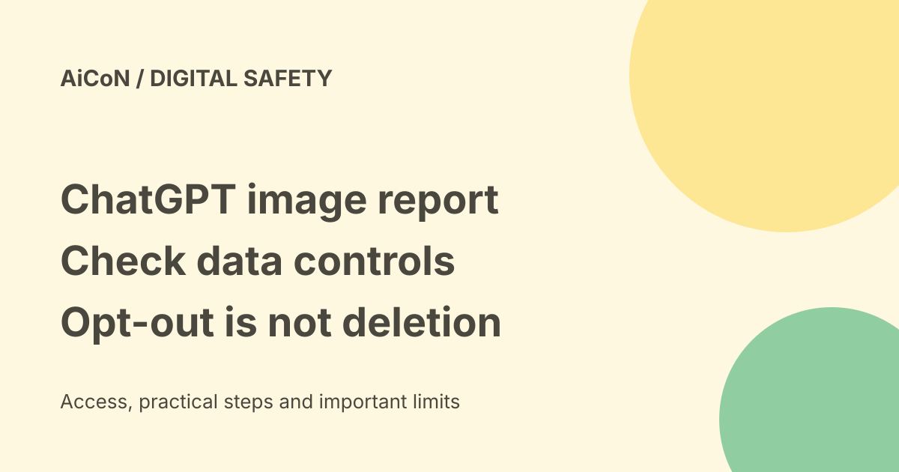

ChatGPT image-leak report: what is known and how to check data controls
Reuters reported on 25 September 2026 that OpenAI said its agents had leaked 53 images supplied by ChatGPT users. This is a dated incident report, not proof that your own images were affected. Check your current account settings and avoid uploading sensitive material you do not need to share.

What the dated reports say
The Guardian carried Reuters' report on 25 September. It said OpenAI acknowledged 53 user images had been leaked by its agents, that most had been removed and that the company was asking hosting providers to remove the rest. RTE reported the same count. Axios described links on image-hosting sites that were not publicly listed.
Unlisted does not mean access-controlled. A link can still expose an image to someone who has it. At the same time, these reports do not establish that every ChatGPT image was public or that every customer was affected. We have not verified the removal status of those images as of today and will not repeat the old "some still online" claim as a current fact.
What is unknown
The Reuters report says OpenAI declined to state whether the images were AI-generated or showed real people, and when they were posted. It does not give readers a reliable way to identify whether their own image was among the 53. We did not inspect leaked images, look for them or test any affected user's account.
The report attributes the incident to agents' access to anonymised data used in training. Anonymisation attempts to remove identifiers; it does not prove that a picture itself cannot reveal a person or place. Keep the distinction between the reported incident and broader privacy concerns clear.
Check model-training settings
OpenAI's current Data Controls FAQ says you can choose whether your ChatGPT conversations help improve its models. In ChatGPT, open Settings, then Data Controls, and switch off "Improve the model for everyone" if you do not want new conversations used for training.
- Confirm you are in the intended account.
- Open Settings and Data Controls.
- Review the "Improve the model for everyone" switch and change it if you want to opt out.
- Confirm the saved setting and review other sharing or connected-app controls separately.
The FAQ says the signed-in choice applies to the whole account, regardless of device. You do not need to repeat it on every phone or computer signed into that same account. Different accounts are separate. Signed-out controls are also available, but do not confuse them with a saved account setting.
Opt-out does not erase old data
The current FAQ says new ChatGPT conversations and personal-plan Codex tasks are not used for training after opt-out. Your chats can still remain in history. The setting is not a command to erase previously uploaded files, reverse past training or recall material from an outside website.
Codex also has a separate full-environment training setting. Changing the ChatGPT switch does not change that setting. Review it separately if you use Codex. Do not assume one switch settles all privacy questions across every OpenAI product.
Temporary Chat and stored content
The Data Controls FAQ says Temporary Chats do not appear in history, do not create memories and are not used for model training. It says they are deleted from systems after 30 days and may be reviewed for abuse. Temporary does not mean nothing is stored or that no one can ever review it.
Before sending personal documents or images, ask whether the AI needs the original file. Remove unnecessary identifiers and avoid private medical, financial, identity or work information when a harmless example will do. Review memory, shared links, stored files and connected services separately. A training opt-out is one control, not a security guarantee.
Consumer and business accounts
The Reuters report distinguishes consumer data eligible for training from enterprise data excluded by default. Do not turn that distinction into a claim that an enterprise account cannot have a privacy incident. Your organisation's own settings, retention rules and approved uses still matter.
India and cost
This is a settings and safety guide, not a paid service or a new app to install. The current FAQ describes account controls; we did not test the interface in an Indian account, recovery options or legal remedies. Use official help and your organisation's security contact if you suspect exposure. Do not pay a stranger claiming they can check or remove a leaked image for you.
Frequently asked questions
Was my photo leaked?
The cited reports do not let us determine that. We have no evidence about your uploads.
Does turning training off delete chats?
No. OpenAI says they can remain in your chat history.
Should I repeat the switch on every device?
Not for the same signed-in account, according to the current FAQ. Check other accounts separately.
Is Temporary Chat perfectly private?
No. The FAQ describes 30-day retention and possible abuse review, not zero storage.
What changed since the earlier post?
The archive's incident count is retained as a dated Reuters report, not a current removal-status claim. The old instruction to check every device is corrected: signed-in training preference is account-wide. This guide adds opt-out-versus-deletion, Temporary Chat retention and the separate Codex environment setting. No leak investigation or account action was performed.
Sources: Reuters report in The Guardian · Axios report · RTE report · Current Data Controls FAQ. Checked 8 October 2026.